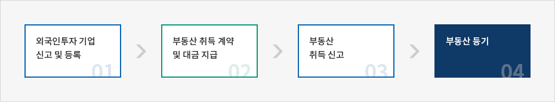
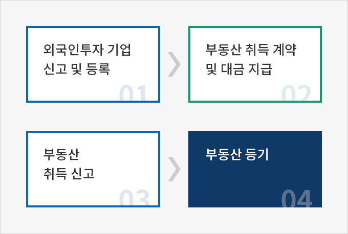
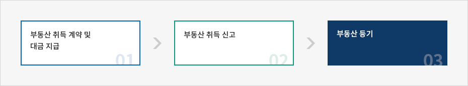
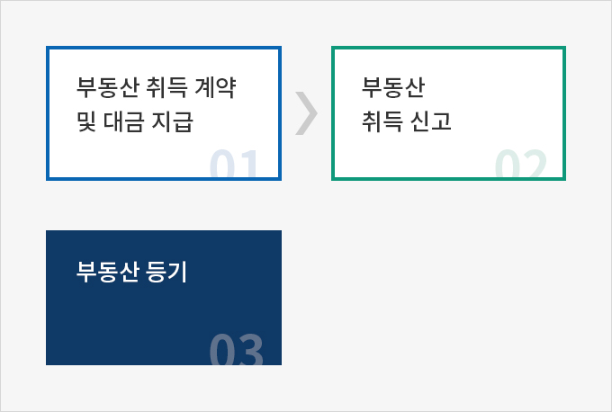
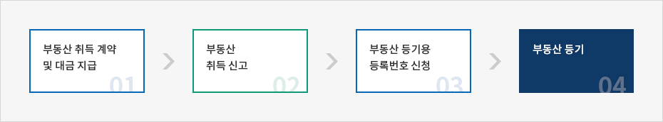
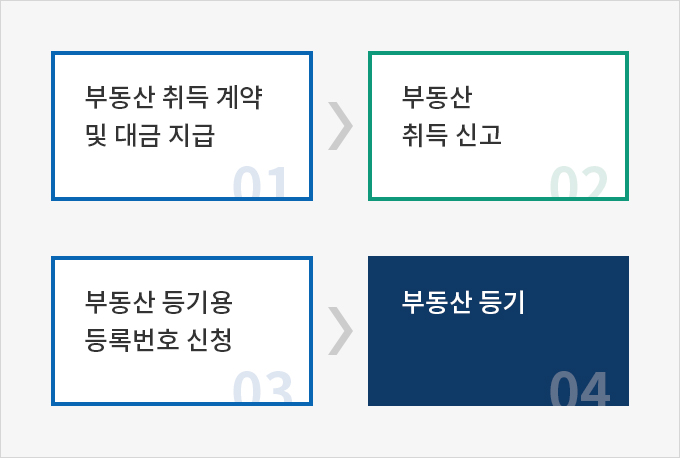
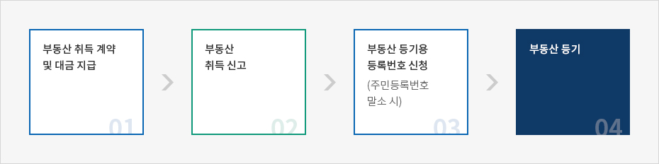
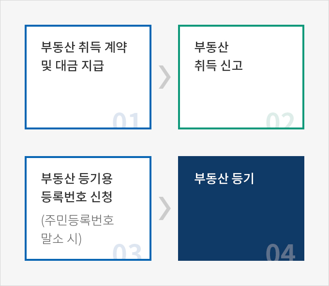

절차 및 필요서류
- Home
- 경영·생활
- 부동산 취득
- 절차 및 필요서류
외국인투자기업
외국인투자기업이 영리활동을 위해 부동산을 취득하는 경우 「부동산 거래신고 등에 관한 법률」,「 외국인투자 촉진법」,「 부동산등기법」등 이 적용된다.



- 외국인투자 기업 신고 및 등록
- 부동산취득 계약 및 대금 지급
- 부동산 취득 신고
- 부동산 등기

- 외국환은행 본 · 지점 또는 KOTRA에서 외국인투자 신고 및 등록한다.
- 부동산 취득계약 체결 후 대금을 지급한다.
- 부동산 소재지 시, 군, 구청에서 부동산 취득신고를 한다. 신고기한은 계약체결일로부터 60일 이내이며 제출서류는 부동산 취득계약서이다.
- 토지소재지 관할등기소에 부동산 소유권 이전 등기를 하며 신고기한은 계약체결일 또는 잔금지급일로부터 60일 이내이다. 구비서류는 법인등기부등본(개인 : 외국인등록증 사본), 등기신청서, 등기원인증명서류(검인계약서 등), 등기권리증, 부동산 등기부등본 등이다. 대리인 신고 시 위임장과 대리인 신분증이 추가된다.
거주외국인 : 외국인, 외국법인의 국내지점
거주외국인의 부동산 취득 시 「부동산 거래신고 등에 관한 법률」, 「부동산등기법」등이 적용된다.


- 부동산 취득 계약 및 대금 지급
- 부동산 취득 신고
- 부동산 등기

- 부동산취득계약 체결 후 대금을 지급한다.
- 부동산 소재지 시, 군, 구청에서 부동산 취득신고를 한다. 신고기한은 계약체결일로부터 60일 이내이며 제출서류는 부동산 취득계약서이다.
- 토지소재지 관할등기소에 부동산 소유권 이전등기를 하며 신고기한은 계약체결일 또는 잔금지급일로부터 60일 이내이다. 구비서류는 지점법인등기부등본(개인: 외국인등록증 사본), 등기신청서, 등기원인증명서류(검인계약서 등), 등기권리증, 부동산 등기부등본 등이다. 대리인 신고 시 위임장과 대리인 신분증이 추가된다.
비거주외국인
비거주외국인의 부동산 취득 시 「외국환거래법」, 「부동산 거래신고 등에 관한 법률」,「 부동산등기법」등이 적용된다.


- 부동산 취득 계약 및 대금 지급
- 부동산 취득 신고
- 부동산 등기용 등록번호 신청
- 부동산 등기

- 부동산취득계약을 체결한다.
- 부동산 관련 대금을 지불한다.
- 부동산취득자금 인출 시 「외국환거래법」에 따라 외국환은행 본·지점에 부동산취득신고를 한다. 제출서류는 부동산 취득계약서, 부동산감정서 또는 공시지가 확인서, 부동산등기부등본이다. 부동산뿐만 아니라 부동산에 대한 권리(물권, 임차권)도 신고해야 하며, 이 신고서가 있어야 향후 부동산 처분대금 해외 송금이 가능하다.
- 부동산 소재지 시, 군, 구청에서 부동산 취득신고를 한다. 신고기한은 계약체결일로부터 60일 이내이며 제출서류는 부동산 취득계약서이다.
- 부동산 등기용 등록번호는 체류지(국내에 체류지가 없는 경우에는 대법원 소재지에 체류지가 있는 것으로 본다)를 관할하는지방출입국·외국인관서의 장이 부여한다. 제출서류는 개인의 경우 토지취득신고필증과 여권사본, 법인의 경우 토지취득신고필증과 해당국가에서 발급한 법인등록, 대표자, 대표자 주소지 증명서류 등이 있다. 대리인 신청 시 위임장과 대리인 신분증이 추가된다. 토지소재지 관할등기소에 부동산 등기를 하며 신고기한은 계약체결일 또는 잔금지급일로부터 60일 이내이다. 구비서류는 지점법인등기부등본(개인 : 외국인등록증사본), 등기신청서, 등기원인증명서류(검인계약서 등), 등기권리증, 부동산 등기부등본 등이다. 대리인 신고 시 위임장과 대리인 신분증이 추가된다.
영주권자
영주권자는 대한민국 국적을 보유하고 있어 국내거주와 관계없이 내국인과 동일하게 간주된다. 영주권자의 부동산 취득 시 「부동산거래신고 등에 관한 법률」,「 부동산등기법」등이 적용된다.


- 부동산 취득 계약 및 대금 지급
- 부동산 취득 신고
- 부동산 등기용 등록번호 신청 (주민등록번호 말소 시)
- 부동산 등기

- 부동산취득계약체결 후 대금을 지급한다.
- 부동산 소재지 시, 군, 구청에서 부동산 취득신고를 한다. 신고기한은 계약체결일로부터 60일 이내이며 제출서류는 부동산 취득계약서이다.
- 주민등록번호가 말소된 경우에는 서울지방법원을 통해 부동산등기용 등록번호 신청이 가능하다. 제출서류는 주소지 증명서* 또는 거주사실증명서 또는 재외국민등록증이다.
- 토지소재지 관할등기소에 부동산 등기를 하며 신고기한은 계약체결일 또는 잔금지급일로부터 60일 이내이다. 구비서류는 주소지증명서 또는 거주사실증명서, 등기신청서, 등기원인 증명서류(검인계약서 등), 등기권리증, 부동산 등기부등본이다. 대리인 신고 시 위임장과 대리인 신분증이 추가된다.
※ 주소지 증명서 : 재외공관발행 재외국민거주사실 증명서